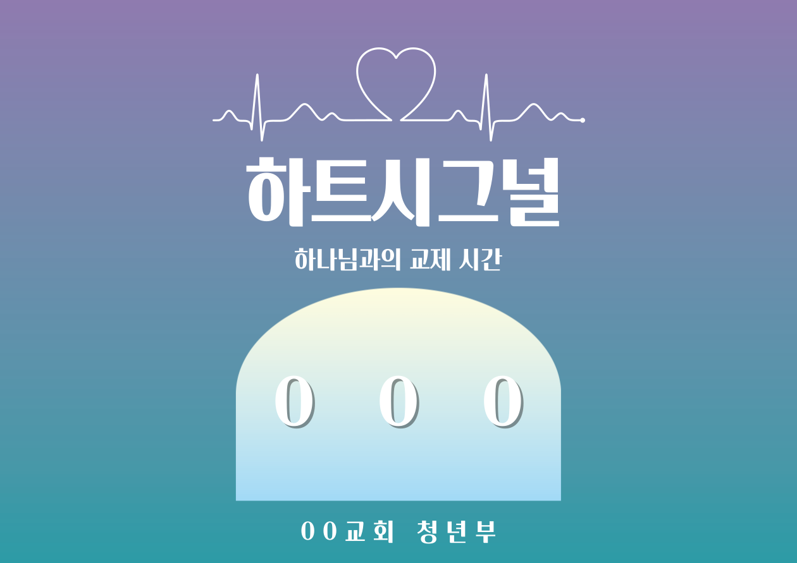

교회 여름 수련회 참석자용 네임카드 디자인으로 프로그램 주제와 분위기에 맞춰 제작
참여자들이 친근하게 느낄 수 있도록 일러스트, 타이포그래피, 색상 톤을 통일감 있게 구성
Adobe Photoshop, Illustrator
주제별 콘셉트(하트시그널, 나는 GC, 여름캠프) 시각화
곡선형 레이아웃과 파스텔/비비드 색상 조합으로 따뜻한 이미지 연출
타이틀 폰트 대비로 주제 전달력 강화
하트시그널 : 그라데이션과 심박선 그래픽으로 ‘하나님과의 교제’ 감정 표현
나는 GC! : 밝고 캐릭터적인 그래픽으로 청년부의 활기 강조
여름수련회 : 일러스트 중심의 캠프 분위기로 참여감 상승
